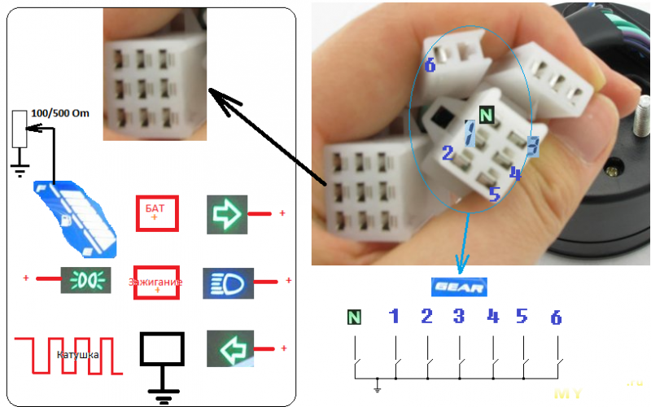

Ищется по словам «12000RPM LCD Digital Odometer Speedometer Tachometer»
Описание у продавцов отличается от реального.
Коротко: все функции работают.
Со стороны прибора так:

Для индикации передач — замыкать на землю, для световых приборов на +
Средняя колонка клемм — питание:
верхний — на батарею (лучше через предохранитель)
средний — на ключ зажигания.
нижний — земля.
Нижний левый для оборотов подключил к катушке зажигания:
Можно намотать несколько витков на высоковольтный провод — пробовал работает.
Установки для спидометра, датчика топлива и импульсов зажигания.
Поправка к картинке: 2 — двухтактный, 4 — четырёхтактный
Для запоминания — перебрать все -> перестали мигать -> выключить зажигание.
Значёк батареи мигает при напряжении ниже 12,8 вольт.
Пришел уже настроенный на km/h
Меняют при включённом зажигании долгим нажатием (не проверял).
Там-же переключение на растояние поездки и сброс.